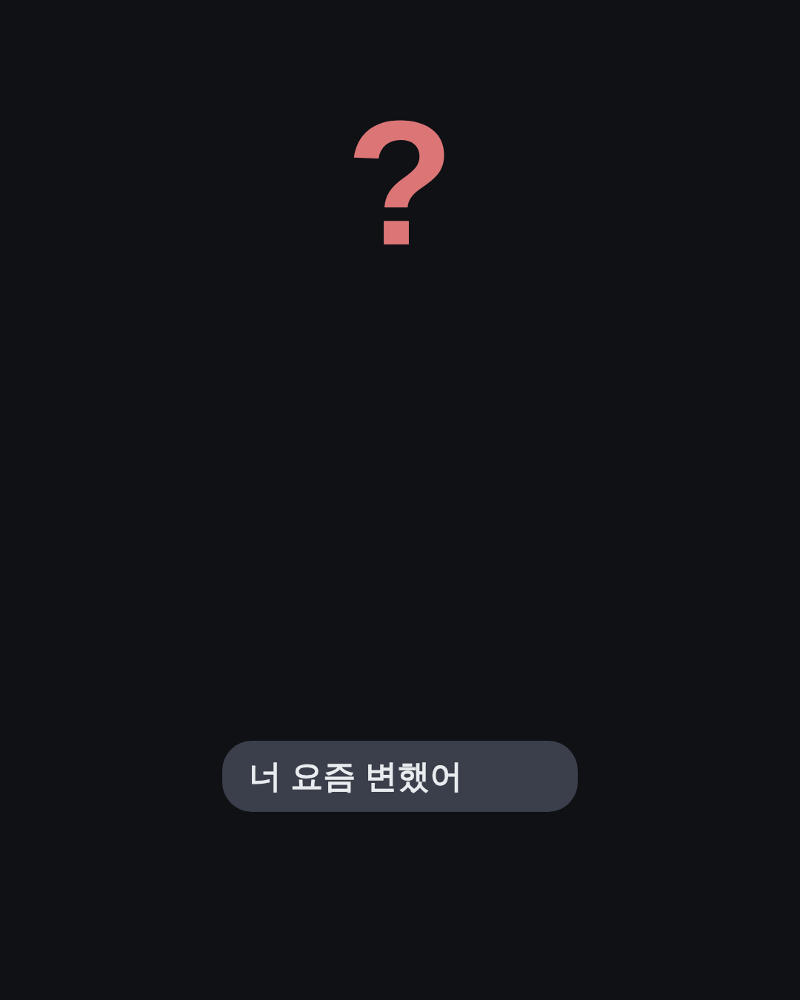
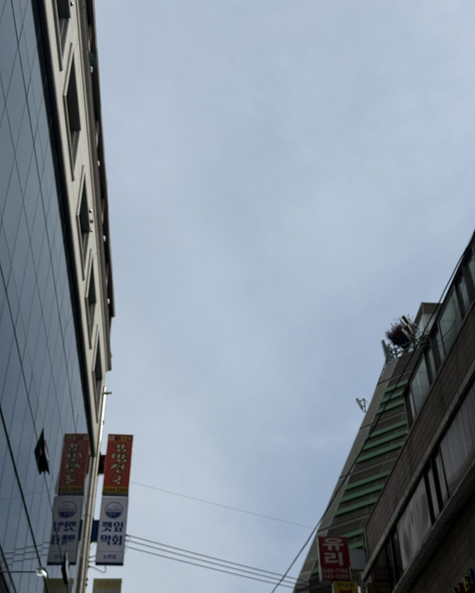
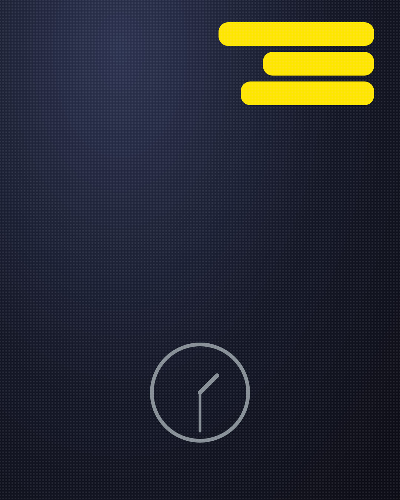
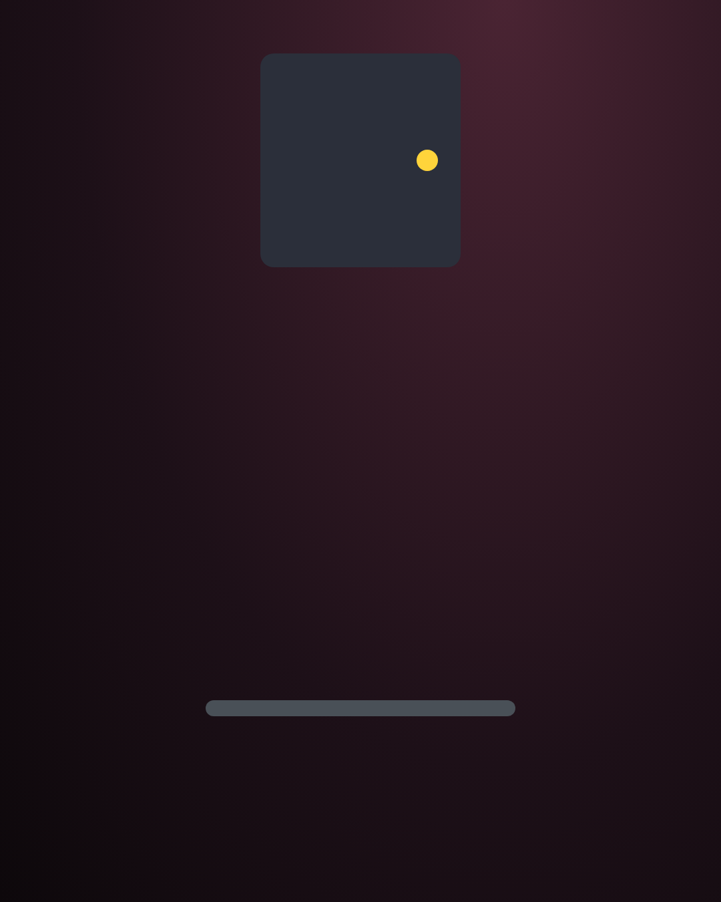
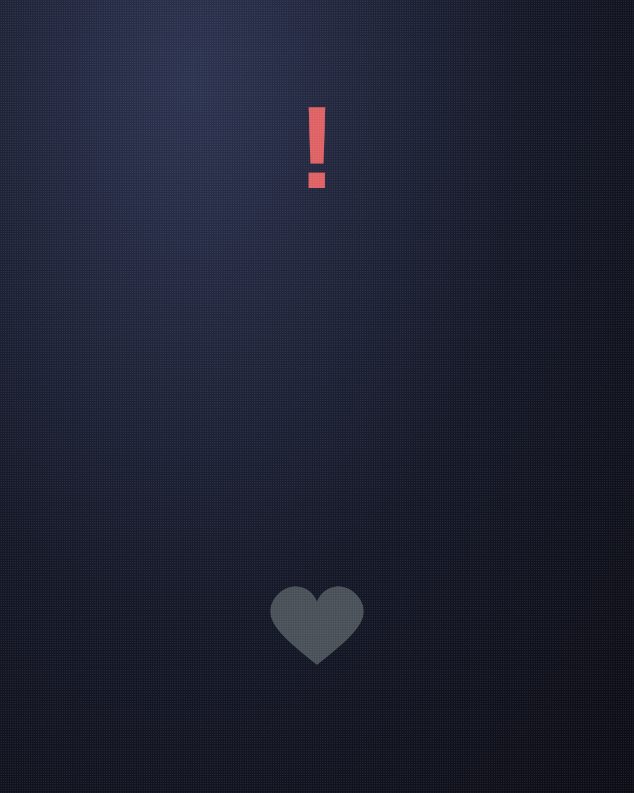
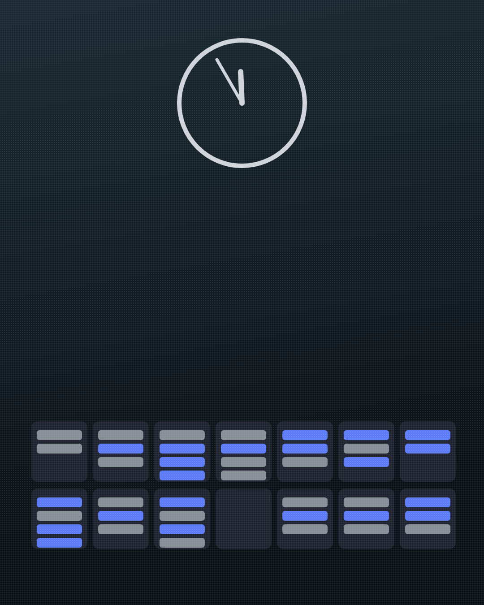
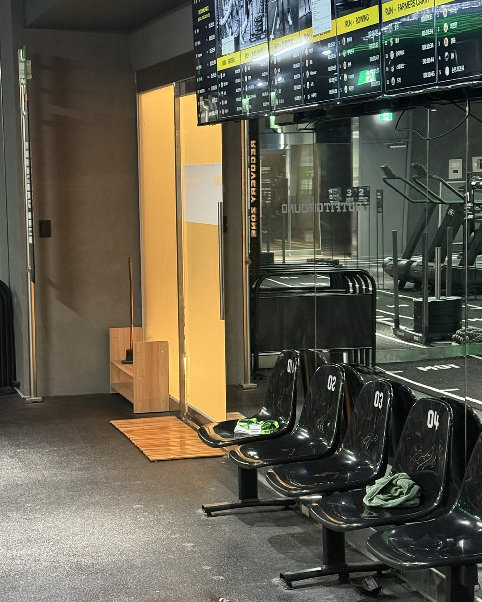
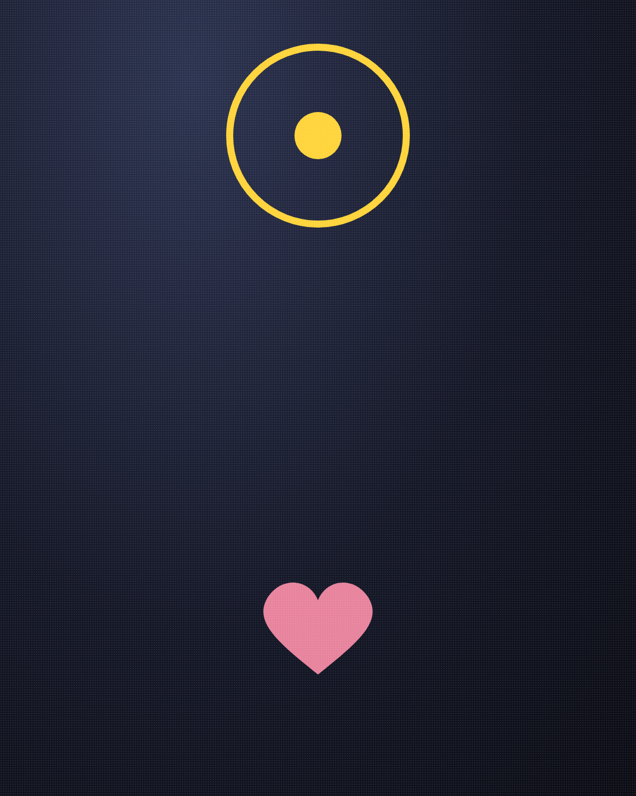
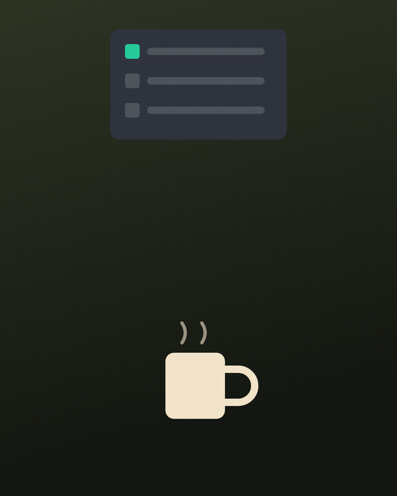
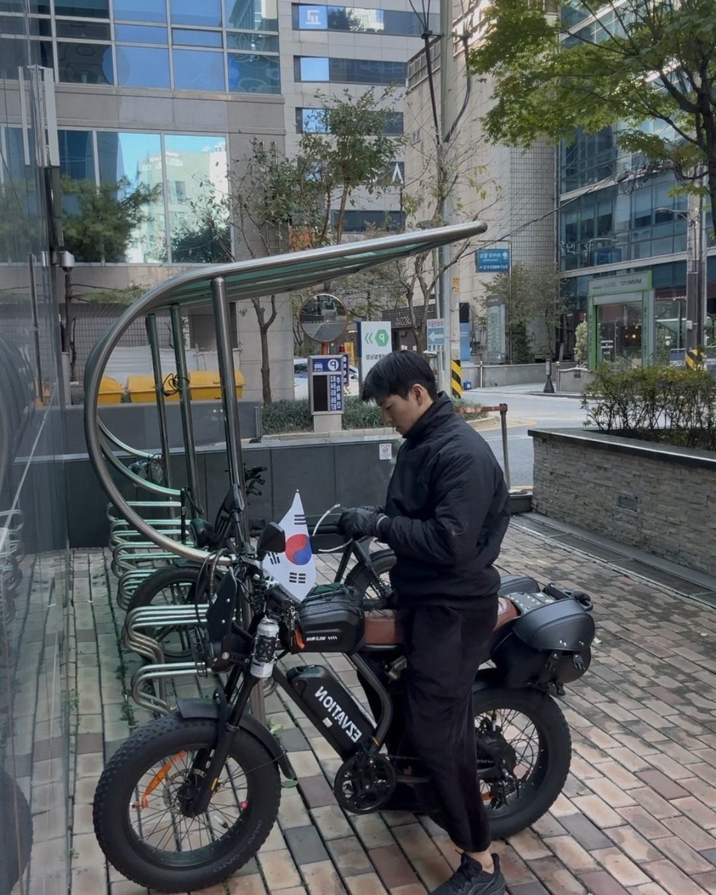

여자가 "너 요즘 변했어" 할 때,
남자가 하면 안 되는 대답
(남자친구에게 보내주세요.)
1/14
@mszexc
넘겨보세요 →

"너 요즘 변했어."
이 말은 질문이 아니에요.
2/14
@mszexc
남자들끼리 하는 말 #53

여자가 이 말을 할 때는
이미 며칠째 혼자 참은 뒤예요.
(작은 변화를 하나씩 세다가 나온 말.)
3/14
@mszexc
남자들끼리 하는 말 #53

그런데 남자는
대부분 이렇게 대답해요.
4/14
@mszexc
남자들끼리 하는 말 #53
"뭐가? 나 똑같은데."
(가장 흔하고, 가장 서운한 대답.)
5/14
@mszexc
남자들끼리 하는 말 #53

하면 안 되는 대답 ①
"아무 일 없어."
(문을 닫는 말이에요.)
6/14
@mszexc
남자들끼리 하는 말 #53

하면 안 되는 대답 ②
"너가 예민한 거야."
(서운함이 그녀 탓이 돼요.)
7/14
@mszexc
남자들끼리 하는 말 #53

하면 안 되는 대답 ③
"요즘 바빠서 그래."
(이유는 되는데, 마음은 안 돼요.)
8/14
@mszexc
남자들끼리 하는 말 #53

남자들끼리는 이렇게 말해요.
"변했다는데 뭐가 변했는지 모르겠어."
(모르는 게 맞아요. 그래서 물어봐야 해요.)
9/14
@mszexc
남자들끼리 하는 말 #53

여자가 듣고 싶은 건
해명이 아니라, 알아챘다는 신호예요.
10/14
@mszexc
남자들끼리 하는 말 #53
이렇게 대답해 보세요.
"내가 요즘 좀 그랬어? 뭐가 제일 서운했어?"
11/14
@mszexc
남자들끼리 하는 말 #53

그리고 하나만 바꾸세요.
그녀가 말한 것 중, 제일 작은 것부터.
(큰 약속보다 작은 변화가 먼저 닿아요.)
12/14
@mszexc
남자들끼리 하는 말 #53

여자분들은 "변했어" 대신
하나만 콕 집어 말해 주세요.
("요즘 잘 자라는 연락이 없어서 서운했어.")
13/14
@mszexc
남자들끼리 하는 말 #53

이것만 기억하세요.
"너 요즘 변했어"는, 아직 붙잡고 싶다는 말이에요.
남자가 하는 말의 뜻은 전자책 1·2권에 · 프로필 링크에서 무료로 받아보세요
14/14
@mszexc
남자들끼리 하는 말 #53